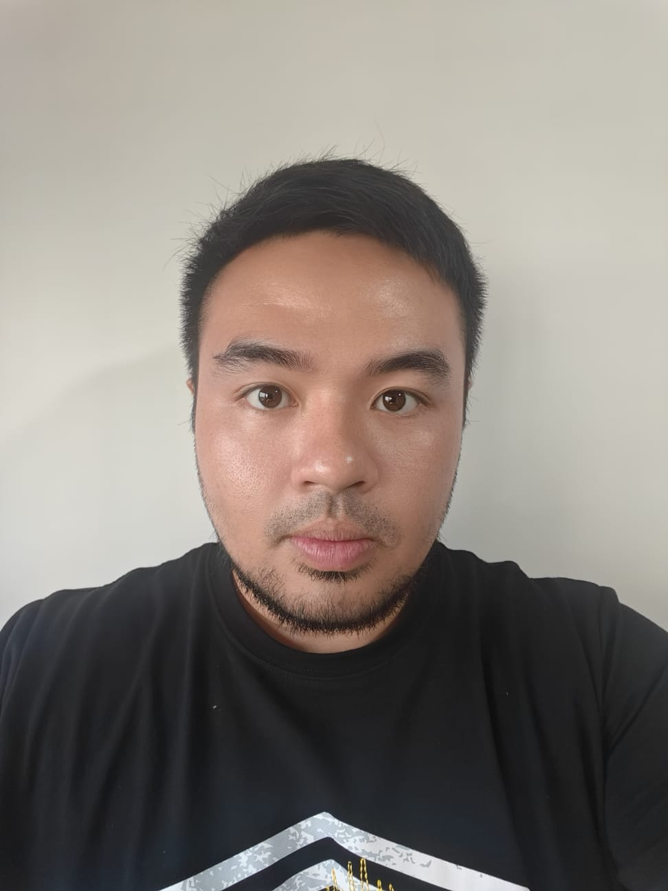

Nur Sholihiin

Summary
I always give my best in the assignments I'm doing. Experience in many fields.
Education
- Diploma , Marine and Offshore Technology- Ngee Ann Polytechnic (2012-2015)
Work Experience
- Tutor - Learn and Score Academy
Current - Nov 2022
- Thought math for Primary and secondary
- Thought science for Primary and secondary
- Smit Salvage Singapore
Nov 2022 - Jan 2022
- Coordinate Operations and projects overseas
- Finance department
- Standby Diver
Skills
- Technical
- Mocrosoft
- Organise
- Finance
Awards and Certifications
- Keppel Fels - 2011(Final year Project)
Others
My Hobbies Contact Me